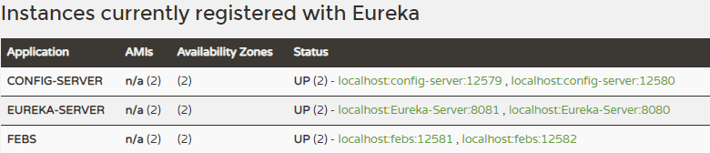
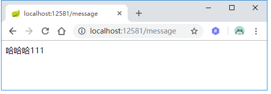
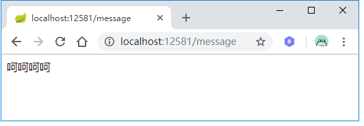
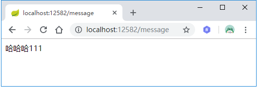
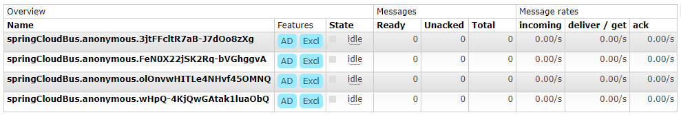
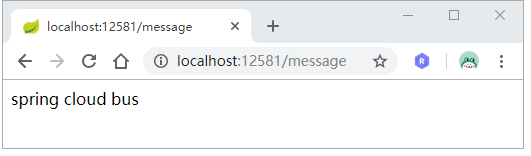
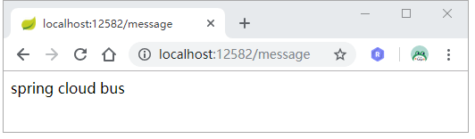

在上一节Spring Cloud Config统一配置管理中，我们实现了通过往Config-Client发送/refreshPOST请求来刷新配置。不过这种方式只对单个Config-Client有效（往哪个Config-Client发送刷新请求，哪个配置就得到刷新，剩下的Config-Client获取的仍是旧的配置信息）。当Config-Client实例集群数量较多时，如果都要手动一个一个去刷新配置，不仅麻烦还容易遗漏。值得庆幸的是，我们可以借助Spring Cloud Bus来自动刷新集群的配置信息。
Spring Cloud Bus使用轻量级的消息代理（如RabbitMQ，Kafka）连接分布式系统的节点，可以以广播的形式将一些变更信息（如配置的变更）扩散到分布式链路中去。所以我们可以在Config-Server和Config-Client集群中加入Spring Cloud Bus，然后往某个Config-Server实例发送/refresh请求来刷新集群中所有实例的配置信息。
在引入Spring Cloud Bus之前，我们先来简单验证下开头的结论。我们用上一节的源码为基础，来搭建Eureka-Server、Config-Server和Config-Client的集群。
将这三个项目打成jar包后，分别使用以下命令来启动一个双节点的Eureka-Server集群：
1 | java -jar Eureka-Service-0.0.1-SNAPSHOT.jar --spring.profiles.active=peer1 |
然后分别使用以下命令来启动一个双节点的Config-Server集群：
1 | java -jar Config-Server-0.0.1-SNAPSHOT.jar --server.port=12579 |
最后分别使用以下命令来启动一个双节点的Config-Client集群：
1 | java -jar Config-Client-0.0.1-SNAPSHOT.jar --server.port=12581 |
访问http://localhost:8080/查看集群节点是否都启动成功：

这时候我们访问http://localhost:12581/message查看message的值：

接着手动修改Git仓库里的message值为'呵呵呵呵'，并往12581端口的Config-Client发送刷新请求：
1 | > curl -u mrbird:123456 -X POST http://localhost:12581/refresh |
再次访问http://localhost:12581/message：

可以看到12581端口的Config-Client获取的配置信息已经得到了更新，那12582端口的Config-Client呢？访问http://localhost:12582/message看看结果：

可看到，其获取的配置仍然是旧的。这也证实了我们一开始的结论。
引入Spring Cloud Bus
Spring Cloud Bus支持RabbitMQ和Kafka等消息中间件，这里只介绍配合RabbitMQ的使用方式。RabbitMQ的安装与启动可以参考https://mrbird.cc/Spring-Cloud-Hystrix-Dashboard.html中的介绍。
在Config-Server和Config-Client的pom中引入spring-cloud-starter-bus-amqp和spring-boot-starter-actuator依赖：
1 | <dependency> |
其中spring-cloud-starter-bus-amqp是Spring Cloud Bus的RabbitMQ实现，刷新用的端点由spring-boot-starter-actuator提供。
然后在Config-Server和Config-Client的application.yml中引入RabbitMQ的连接信息：
1 | spring: |
到这里，对Config-Server和Config-Client改造就完成了，没错就是这么简单🙂。
我们重新打包Config-Server和Config-Client，然后运行以下命令启动双节点Config-Server集群：
1 | java -jar Config-Server-0.0.1-SNAPSHOT.jar --server.port=12579 |
接着分别使用以下命令来启动一个双节点的Config-Client集群：
1 | java -jar Config-Client-0.0.1-SNAPSHOT.jar --server.port=12581 |
启动后我们访问RabbitMQ的控制页面：http://localhost:15672，可看到在Queues中多了四个springCloudBus队列：

手动修改Git仓库里message的配置值为'spring cloud bus'，然后往任意一个Config-Server节点发送/bus/refreshPOST请求：
1 | curl -u mrbird:123456 -X POST http://localhost:12580/bus/refresh |
分别访问http://localhost:12581/message和http://localhost:12582/message：


配置都已刷新成功。
WebHooks
配合WebHooks可以实现自动配置刷新，在配置得到修改的时候它可以代替我们向Config-Server发送刷新请求。以码云为例，添加一个WebHooks：
由于这里是在本地运行测试没有公网IP，所以没法测试，这里就不演示了。
源码链接：
https://github.com/wuyouzhuguli/SpringAll/tree/master/42.Spring-Cloud-Bus